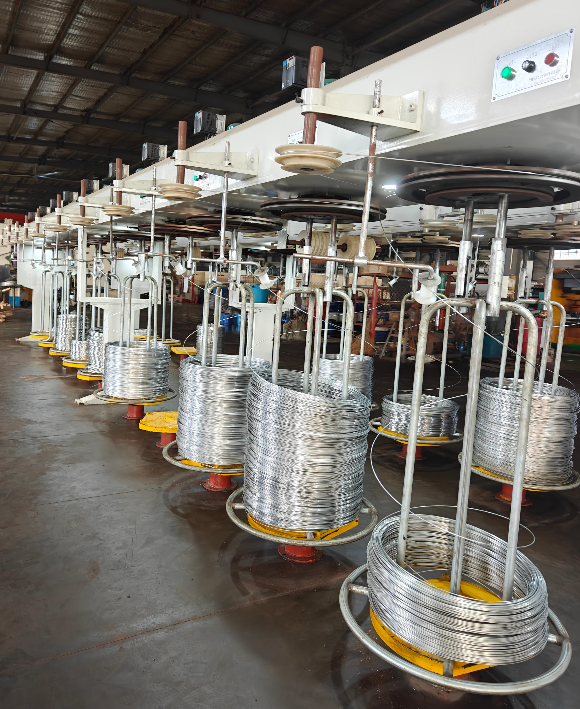
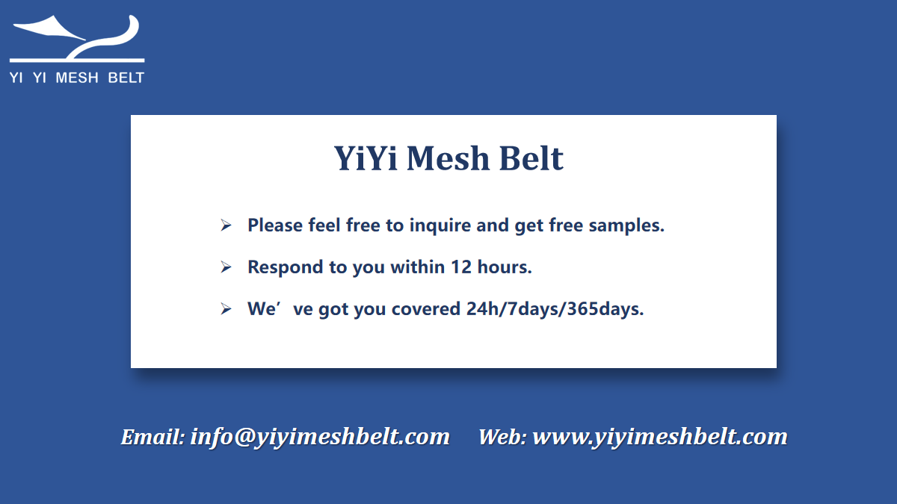
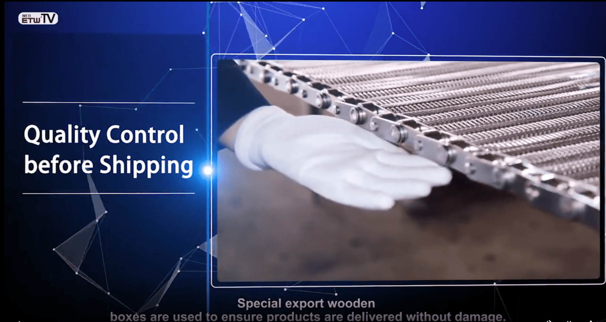

Robotic Welding
Controlled Welding for Repeat Production
Use for OEM buyers who need proof of welding consistency and controlled production workflow.
YIYI Mesh Belt supports OEM equipment builders, distributors, and industrial replacement buyers through factory-based production, controlled manufacturing processes, and practical delivery coordination.
Manufacturing assurance at YIYI Mesh Belt is not presented as a slogan. It is built through real production control, process discipline, repeatability, and a working system that connects drawings, materials, fabrication, inspection, and export preparation into one accountable manufacturing flow.

Some buyers want to verify factory capability first. Some already have drawings ready. Others need assurance that repeat production and export execution will stay stable over time. Start from the path that matches your project stage.
These video entry cards help buyers verify that YIYI Mesh Belt is not only describing manufacturing capability. The proof can be watched, checked, and later expanded with the team's final public video set.
Use for OEM buyers who need proof of welding consistency and controlled production workflow.
Use for customers who care about material control, response speed, and repeat-order stability.
Use as the main process proof entrance until the final public factory video collection is approved.
For many industrial buyers, manufacturing assurance is not only about whether a supplier can make one order. It is about whether that supplier can maintain consistency, communicate technical requirements clearly, support repeat production, and reduce avoidable risk over time.
At YIYI Mesh Belt, manufacturing assurance means a controlled workflow rather than a product promise alone. It means the belt is not treated as an isolated item, but as part of an application, a line requirement, an engineering specification, and a long-term supply relationship.
This is why our manufacturing logic is built around process clarity, repeatability, matching support, and practical coordination from production to delivery.
Each process listed here is executed in-house, not outsourced. Control over the full production chain is what makes repeat supply possible.



Repeat production is one of the most important tests of a real manufacturer. A supplier may complete one order successfully, but long-term cooperation depends on whether dimensions, process handling, communication, and matching logic can remain stable across future orders.
YIYI Mesh Belt supports repeat production through process discipline, specification review, and coordination based on drawings, samples, and application requirements. This is especially important for OEM builders, distributors, and replacement projects where continuity matters more than one-time delivery.

OEM and replacement projects often require more than standard product supply. They require communication around dimensions, application conditions, matching components, and compatibility with existing systems.
YIYI Mesh Belt supports these needs by working from technical drawings, old samples, customer specifications, and line-based requirements. This helps buyers move beyond generic catalog sourcing and toward more application-aware manufacturing support.
For replacement projects, the priority is often not only to supply a belt, but to reduce mismatch risk and improve coordination with the existing conveyor structure. For OEM builders, the priority is usually stable production, communication clarity, and long-term supply support.

Industrial buyers need more than verbal confidence. They need a supplier who can communicate quality logic clearly, present production discipline credibly, and support verification when needed.
At YIYI Mesh Belt, manufacturing assurance is connected to broader quality and traceability thinking. This includes process checkpoints, documented communication, and readiness to support customers who require more visibility into manufacturing and supply reliability.
For buyers who prioritize supplier verification, audit-readiness and transparent factory communication are part of practical cooperation — not an extra marketing statement.

Manufacturing capability matters, but manufacturing assurance matters more. Buyers usually do not lose time and money because a supplier cannot describe a product. They lose time and money because of inconsistency, mismatch, weak communication, delayed adjustment, and avoidable production uncertainty.
A more controlled manufacturing process helps reduce these risks. It supports clearer expectations, better repeatability, more practical OEM coordination, and stronger long-term supply confidence. This is why YIYI Mesh Belt positions manufacturing assurance as part of the buyer's risk reduction — not merely as internal factory language.
YIYI Mesh Belt is positioned as a factory-based manufacturer with controlled production processes, OEM support capability, and manufacturing-oriented supply logic.
Yes. OEM support can be based on drawings, technical specifications, samples, and line requirements.
Replacement support can include sample review, matching analysis, and communication around compatibility with existing systems.
Because industrial buyers often need more than one successful order. They need consistency across future batches, clearer dimensional control, and stable long-term supply.
Yes. Manufacturing assurance at YIYI Mesh Belt extends to packaging, shipment preparation, and coordination for export delivery.
Yes. YIYI Mesh Belt presents factory transparency and audit-oriented communication as part of practical cooperation.
Talk with YIYI Mesh Belt about OEM projects, replacement needs, matching requirements, or long-term supply planning.